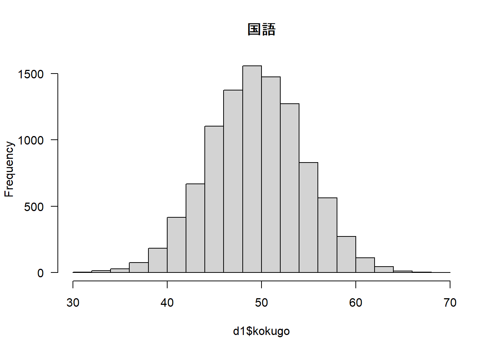
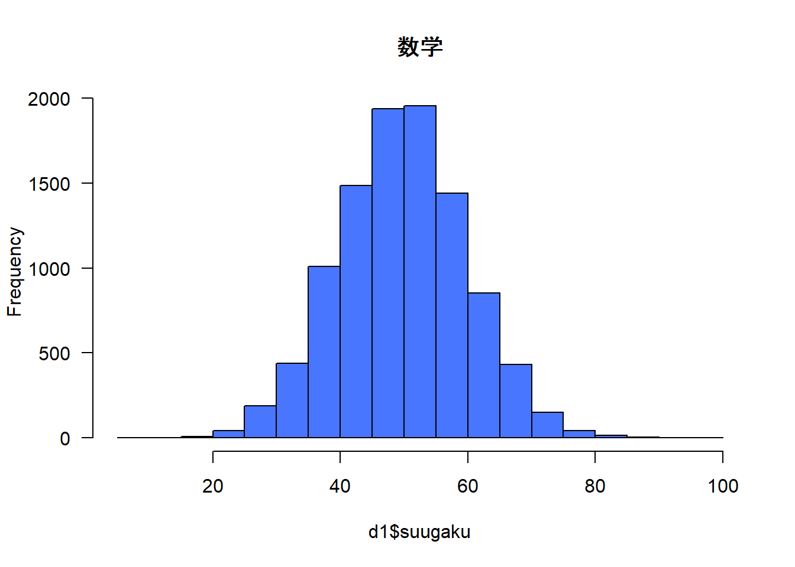
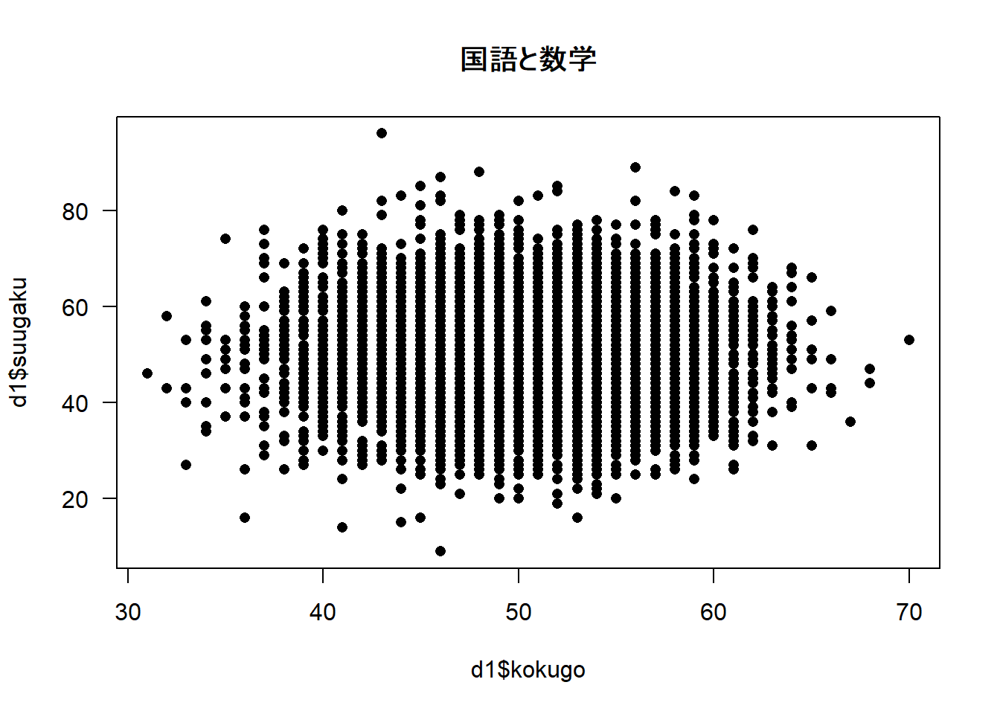

setwd("C:\\Users\\terao\\CloudStation\\TERAO\\2022\\筑波_心理学統計法2\\授業資料\\第1回\\")宿題1 記述統計量総復習
宿題の概要
- 群分け変数を1つ，量的変数を2つ以上含むデータセットを作成し，CSV形式のファイルとして保存してください。
- CSVファイルをR (RStudio) で読み込み，d1という名前をつけたうえで，最初の6行を表示させてください。また，最初の10行，最後の6行を表示させてください。
- データセットを群ごとに分割してください。
- 量的変数の記述統計量を算出してください。その際，第1四分位数と中央値，第3四分位数を求める指定を行ってください。また，ヒストグラムを描いてください。
- 群ごとに量的変数の記述統計量を算出してください。
- 量的変数間の共分散と相関係数を算出してください。また，散布図を描いてください。
- スクリプトと実行結果全体（図含む）をコピーしてWord等に貼り付け，提出してください。
宿題としてRに実行させるスクリプトは，グレーの箇所のみです。
CSVファイルの読み込み
作業ディレクトリの指定
参考動画を見ながら，自分がCSVファイルを保存したフォルダ名をsetwd()のカッコ内に入れてください。
Rに，分析作業を行うフォルダを知らせるスクリプトです。 これがうまくできていないと，R側で読み込むCSVファイルの場所が認識されません。
Windows端末をご利用の方は，フォルダ名をペーストするとバックスラッシュ\が1つだけの状態になります。フォルダの区切りがバックスラッシュ2つ\\になるように変更してください。
CSVファイルの読み込み，d1と命名
read.csv()は，CSV形式のファイルを読み込む関数です。- 最初の
"lecture1.csv"は，読み込みたいCSVファイルがlecture1.csvという名称であることをR側に伝えています。 - 次の
header=TRUEは，最初の1行目がデータではなく，変数名であることをR側に伝えています。- 変数名がないデータセットを読み込む場合は，
header=FALSEとします。
- 変数名がないデータセットを読み込む場合は，
<-は，代入・格納を意味します。
d1 <- read.csv("lecture1.csv",header=TRUE)指定した作業ディレクトリにCSVファイルがない場合，以下のようなエラーが出ます。
No such file or directoryこの場合は，読み込みたいCSV形式のファイルがそのフォルダにないか，CSVでない形式で保存されている場合があります。ご確認ください。
最初の6行を表示
head()は，最初の何行かを表示してみる関数です。head()の中には，データセットの名前を入れます。いまは，d1というデータセットについて最初の行を表示したいので，d1を入れます。head(d1)とすると，デフォルトで6行分表示してくれます。6行以外としたい場合は，その後ろに表示したい行数を追加します。
head(d1) gender kokugo suugaku
1 m 48 57
2 m 51 34
3 m 53 35
4 m 58 67
5 m 51 43
6 m 43 39最初の10行を表示
head(d1,10) gender kokugo suugaku
1 m 48 57
2 m 51 34
3 m 53 35
4 m 58 67
5 m 51 43
6 m 43 39
7 m 41 63
8 m 40 52
9 m 53 60
10 m 44 41head(d1,100)とすると，100行分表示してくれます。何行表示させるか，遊んでみてください。
最後の6行を表示
tail(d1) gender kokugo suugaku
9995 f 41 46
9996 f 45 68
9997 f 51 51
9998 f 49 46
9999 f 54 59
10000 f 50 50tail(d1)とすると，データの最後の6行分表示してくれます。tail(d1,10)とすると，最後の10行分表示できます。こちらも遊んでみてください。
群ごとのデータの分割
女性(f)のみのデータセット
subset()関数は，あるデータフレームの特定の変数について，あてはまる人のデータだけを抽出する関数です。d1は，群分けする前のデータフレームです。gender=="f"は，性別 (gender) という変数列について女性 (f) となっている行を指定しています。イコール2つ==ですので，気をつけてください。
d1_f <- subset(d1,gender=="f")
head(d1_f) gender kokugo suugaku
5001 f 47 51
5002 f 45 31
5003 f 49 44
5004 f 48 66
5005 f 56 57
5006 f 52 51男性(m)のみのデータセット
d1_m <- subset(d1,gender=='m')
head(d1_m) gender kokugo suugaku
1 m 48 57
2 m 51 34
3 m 53 35
4 m 58 67
5 m 51 43
6 m 43 39量的変数の記述統計量
psychパッケージのインストール
この作業は，初めてパッケージを利用するときのみ実施してください。 一度インストールすれば，電源を切ってから再度コンピュータを立ち上げたとしても，端末側にパッケージのファイルが残っているため，install.packages()を実行することなくパッケージを利用できます。
- 初めてインストールする方は，以下のスクリプトの冒頭の
#は削除してください。#はコメントアウトの意味で，その行をまるごと実行せずに（無視して）先へ進んでくれます。
#install.packages('psych', repos="https://cloud.r-project.org/") psychパッケージの読み込み
- 2回目以降は，ここから実行します。
library(psych)Warning: package 'psych' was built under R version 4.2.1各変数の記述統計量
describe()関数は，記述統計量を求める関数です。文字列が入っているとエラーになります。- 第一四分位数 (25%) と第三四分位数 (75%) を算出するため，
quant=c(.25,.75)を追加しています。 もし余力のある人は，違う分位点にした結果も出力してみてください。
- 第一四分位数 (25%) と第三四分位数 (75%) を算出するため，
- 最初の行では，d1というデータフレームの国語列と数学列を選択して，
d1_ryoと命名するスクリプトです。以降の分析でも使うので，新たに名前を付けておいて長いスクリプトを書かないようにするひとつの作戦です。
d1_ryo <- d1[,c("kokugo","suugaku")]
describe(d1_ryo,quant=c(.25,.75)) vars n mean sd median trimmed mad min max range skew kurtosis
kokugo 1 10000 49.96 5.07 50 49.98 4.45 31 70 39 -0.02 -0.02
suugaku 2 10000 50.19 9.96 50 50.17 10.38 9 96 87 0.03 0.04
se Q0.25 Q0.75
kokugo 0.05 47 53
suugaku 0.10 43 57- varsは，読み込んだ変数の番号です。
- nは，集計に使用したサンプルサイズ（人数）です。
- meanは，標本平均の値です。
- sdは，不偏標準偏差です。人数-1で除した標準偏差です。
- medianは，中央値です。
- trimmedは，調整平均です。デフォルトでは，両端10%ずつを切って平均値を求めます。
- madは，中央値絶対偏差 (Median Absolute Difference) で，中央値からの散らばりに関する統計量です。 \[ MAD=\frac{1}{N}\sum_{i=1}^{N}|x_i-\overline{x}| \]
- min, maxはそれぞれ，最小値・最大値です。
- rangeは，範囲です。
- skewは，歪度(skewness)です。
- kurtosisは，尖度です。
- seは，標本平均の標準誤差 (standard error) です。来週学習します。
- Q0.25およびQ0.75はそれぞれ，第一四分位数と第三四分位数です。
群ごとの記述統計量
describeBy()関数は，群ごとに記述統計量を算出する関数です。d1_ryoは，分析したい量的変数のデータフレームを指定します。文字列が入っているとエラーになります。
describeBy(d1_ryo,d1$gender,quant=c(.25,.75))
Descriptive statistics by group
group: f
vars n mean sd median trimmed mad min max range skew kurtosis
kokugo 1 5000 49.92 5.06 50 49.92 4.45 31 67 36 -0.01 -0.08
suugaku 2 5000 50.20 9.90 50 50.17 10.38 9 96 87 0.04 0.08
se Q0.25 Q0.75
kokugo 0.07 46 53
suugaku 0.14 43 57
------------------------------------------------------------
group: m
vars n mean sd median trimmed mad min max range skew kurtosis
kokugo 1 5000 50.01 5.07 50 50.03 4.45 32 70 38 -0.04 0.03
suugaku 2 5000 50.18 10.02 50 50.16 10.38 15 88 73 0.02 0.00
se Q0.25 Q0.75
kokugo 0.07 47.00 53
suugaku 0.14 43.75 57ヒストグラムの描出
- 量的変数ひとつひとつの分布の形状を，視覚的に確認します。
d1$kokugoおよびd1$suugakuは，ヒストグラムを描きたい変数名の指定です。las=1は，縦軸の文字を成立させるオプションです。las=0やlas=2も試してみてください。col="royalblue1"は，色の指定オプションです。Rの色見本を適宜参照して，好きな色に着色してみてください。main="国語"は，タイトルを国語という文字列にするオプションです。
hist(d1$kokugo,las=1,main="国語")
hist(d1$suugaku,las=1,col="royalblue1",main="数学")
共分散と相関係数の算出
d1_ryoについて，共分散行列と相関行列を算出します。use="pairwise.complete.obs"は，もし欠測値があった場合に，その2つの変数についてデータが揃っている人のデータのみを用いて相関係数を算出する，というオプションです。- このデータでは欠測値はありませんが，実際のデータ分析の際には欠測値がありえますので，指定しておくと無難です。もちろん，
cov()関数でも利用できます。
cov(d1_ryo) kokugo suugaku
kokugo 25.667728 -0.484471
suugaku -0.484471 99.208435cor(d1_ryo,use="pairwise.complete.obs") kokugo suugaku
kokugo 1.000000000 -0.009600631
suugaku -0.009600631 1.000000000散布図の描出
d1$kokugoおよびd1$suugakuは，散布図を作成する2つの量的変数を指定しています。pchは，散布図で用いるマークを指定しています。R plot pch symbolsを参照して，好きなマークに変更してみてください。- こちらでも色指定できます。ヒストグラムと同じように，
col="grey"などと指定します。
plot(d1$kokugo,d1$suugaku,las=1,main='国語と数学',pch=16)